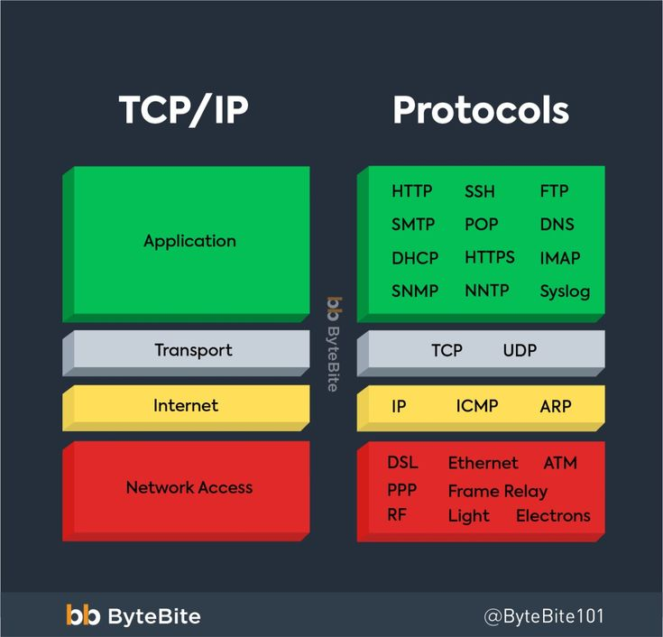

Transmission Control Protocol / Internet Protocol (TCP/IP)
Category: Internet Communication Protocols
TCP/IP is a set of communication protocols that allows computers and devices to connect and communicate over the Internet. It ensures that data is transmitted accurately and reliably between sender and receiver.
TCP (Transmission Control Protocol) breaks data into packets and ensures they are delivered correctly and in order, while IP (Internet Protocol) is responsible for addressing and routing those packets to the correct destination.
TCP/IP is the foundation of modern networking and is used by services such as HTTP, FTP, and systems like DNS.

Figure: TCP/IP communication model showing data transfer between devices